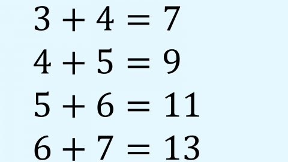
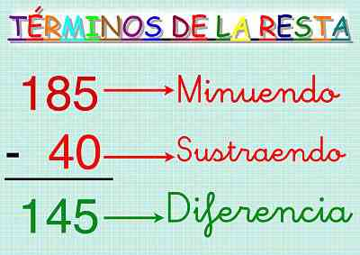
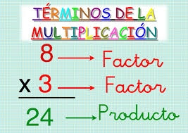
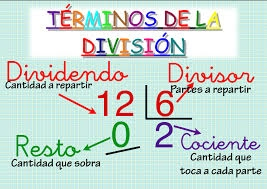

"La esencia de las matemáticas no es hacer las cosas simples complicadas, sino hacer las cosas complicadas simples" -S. Gudder.
"Las matemáticas tienen belleza y romance. El mundo de las matemáticas no es un lugar aburrido en el que estar. Es un lugar extraordinario; merece la pena pasar el tiempo allí." -Marcus du Sautoy.
"Las matemáticas expresan valores que reflejan el cosmos, incluyendo el orden, equilibrio, armonía, lógica y belleza abstracta." -Deepak Chopra
¿Cual es Tu operacion Favorita?
| "Las matemáticas nos hacen razonar mediante una fórmula lógica, utilizando datos reales que son verificables. Esto nos permite enfrentarnos al mundo buscando respuestas basadas en evidencias y no solo en creencias o emociones." |
| "Ayudan a tener pensamiento analítico. Es nuestro pensamiento por defecto, el que nos ayuda a descomponer argumentos en premisas, observar las relaciones que existen y juzgar su veracidad. Cuando nos enfrentamos a un problema matemático, recopilamos datos, analizamos su relación y aportamos una solución." |
La suma o adición es una de las cuatro operaciones básicas de la aritmética que consiste en la adición de dos o más elementos para llegar a un resultado final donde todo se incluye. El símbolo de la suma es el símbolo más (+) y se intercala entre los elementos que se quiere sumar como, por ejemplo: 2+3=5.
La resta, también conocida como sustracción, es una operación que consiste en sacar, recortar, empequeñecer, reducir o separar algo de un todo. Restar es una de las operaciones esenciales de la matemática y se considera como la más simple junto a la suma, que es el proceso inverso.
La multiplicación es una de las cuatro operaciones básicas de la aritmética. Y como se puede observar en el párrafo anterior, puede indicarse con un aspa (×). Sin embargo, en ocasiones se utiliza un punto (·) o un asterisco (*).
La división es una de las operaciones básicas de la aritmética que consiste en separar en partes iguales un total. En matemáticas, el símbolo de la división es el signo (÷), dos puntos (:) o barra oblicua (/). El signo para la división se ubica entre el dividendo y el divisor, siendo, el dividendo la parte total y el divisor el número de partes iguales que se quiere separar. Por ejemplo, si se quiere dividir 10 unidades en 5 partes iguales se expresaría de la siguiente manera: 10 ÷ 5, 10 :5, 10/5.
| Suma | 25 | + | 53 | 78 |
| Resta | 49 | - | 21 | 28 |
| Multiplicación | 25 | * | 10 | 250 |
| Diviión | 400 | / | 20 | 20 |
| Suma | 100 | + | 193 | 293 |
| Resta | 173 | - | 48 | 125 |
| Multiplicación | 75 | * | 23 | 1725 |
| Diviión | 525 | / | 15 | 35 |